Field Guide
Craft a Field Guide: a book and any signature material. It fills in as you meet the creatures: how it works.
Crafting (shapeless)
 →
→
Every Teeming creature drops ordinary leftovers of its kind and one of 35 signature materials. Each material crafts or brews into something, and four materials, with a gold ingot and an amethyst shard, make one of 12 counter charms. Hover or tap a slot for its name.
Craft a Field Guide: a book and any signature material. It fills in as you meet the creatures: how it works.
By the dimension of the creatures that drop them. A shapeless recipe takes its ingredients in any slots.
Dropped by Thornhorn, Gloamhound.
Dropped by Snagwood, Vinedrop Strangler, Snapmaw Bloom.
Dropped by Puffcap Shepherd, Mycelite Shambler.
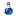
→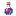
Dropped by Mire Gulper.
Dropped by Dunefin, Shellguard Crab.
Dropped by Rattlecoil, Dripfang.
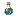
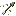
8Dropped by Snowroller, Shiverwraith.
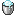
Dropped by Stormeel.
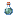
Dropped by Hushwing.
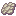
Dropped by Petalkin.
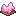
4Dropped by Hollow Mourner.
Dropped by Prismback.
Dropped by Slagspitter, Slagheart Golem, Quakehopper, Lavaleaper.
Dropped by Ash Jackal.
Dropped by Soot Manta.
Dropped by Magma Tortoise.
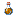
Dropped by Veinleech, Weepling Broodmother.
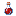
Dropped by Shredjaw Beetle, Scarlet Mantis, Gloomweaver, Blackstone Scuttler.
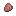
Dropped by Woolcap Grazer.
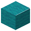
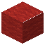
Dropped by Gleamtrap, Phantasm Lantern, Siphonjelly, Spore Cannon.
Dropped by Ossuary Wyrm, Keening Shade, Soulfire Seer, Soulward Revenant.
Dropped by Cindermoth Swarm, Ashharrier, Pyre Herald, Flamewright.
Dropped by Fortress Jailer.
Dropped by Aurovore.
Dropped by Basalt Behemoth.
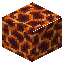
8Dropped by Chorus Grazer.
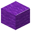
Dropped by Levimoth, Warpseed Bloom, Chorus Husk.
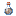
Dropped by Riftjackal, Gatecaster, Hollowmind, Pearlgulp, Exile Wraith.
Dropped by Mending Crystalling, Shardling Colossus, Gemini Watchers, Spirebloom, Resonant Triad.
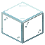
→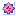
Dropped by Astral Augur, Mote Swarm, Grand Orrery.
Dropped by Phasewalker, Echo Fencer, Chronomite, Recurrent.
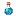
Dropped by Liftstone Monolith, Brinkram, Anchor Golem, Pullstar, Riftmine Sapper.
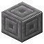
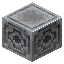
Dropped by Underclinger, Abyss Angler, Brinkray, Wingshear, Driftsong.
Dropped by Nullcantor, Glimmerless, Facet Doppel, Swellshade, Vigil Owl, Void Bloom, Mnemovore, Rotfang.
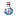
Works in your off-hand: hold a charm in your off-hand, in place of a shield, a totem or a torch, and it blunts the trick named on it. Only the off-hand counts. Each takes four signature materials, a gold ingot and an amethyst shard.

Halves the throw of charges and rams
Answers the Thornhorn, Snowroller, Woolcap Grazer, Brinkram and Brinkray.
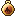
Halves the Shiverwraith's frost and its tether's healing
Answers the Shiverwraith.
The Hushwing no longer hears you mine
Answers the Hushwing.
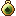
Poison from Teeming mobs lasts half as long
Answers the Rattlecoil and the Mycelite Shambler.
Your hits cool a Slagheart Golem; Slagspitter fire burns you half as much
Answers the Slagheart Golem and the Slagspitter.
Snaps tethers on you after 2 seconds
Answers the Veinleech and the Shiverwraith.
Aurovores and Siphonjellies fail to steal from you half the time
Answers the Aurovore and the Siphonjelly.
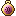
Cuts Silenced from 4 seconds to 1
Answers the Keening Shade.
Halves pulls, lifts, slams, throws and Levitation
Answers the Pullstar, Abyss Angler, Underclinger, Liftstone Monolith, Levimoth, Spirebloom, Riftmine Sapper, Brinkram and Brinkray.
Forced teleports fail half the time; the Gatecaster's gates show sooner
Answers the Riftjackal, Exile Wraith, Warpseed Bloom, Chorus Husk and Gatecaster.
Void Rot and Heavy last half as long
Answers the Rotfang and the Anchor Golem.
Experience theft fails half the time; nulled enchantments keep half
Answers the Mnemovore and the Nullcantor.
| Item | Where it comes from |
|---|---|
| Dropped by the creatures above, one kind per family. | |
| A rare drop from a player's kill: 2.5%, +1% per Looting level, from a player's kill; apex mobs 10%, +2% per Looting level, from a player's kill. More. | |
| One for each of the 90 creatures, in creative mode. |